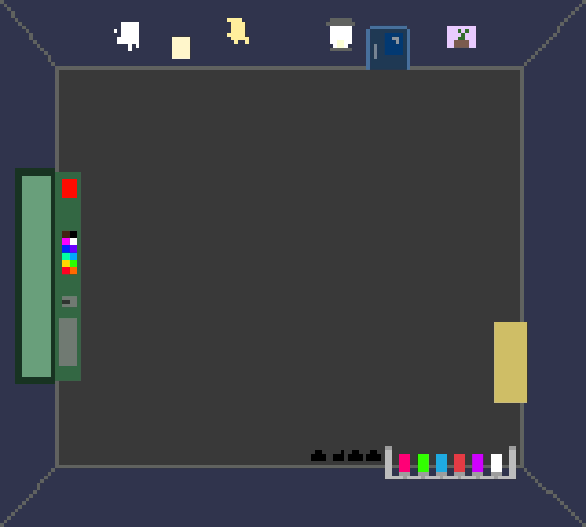
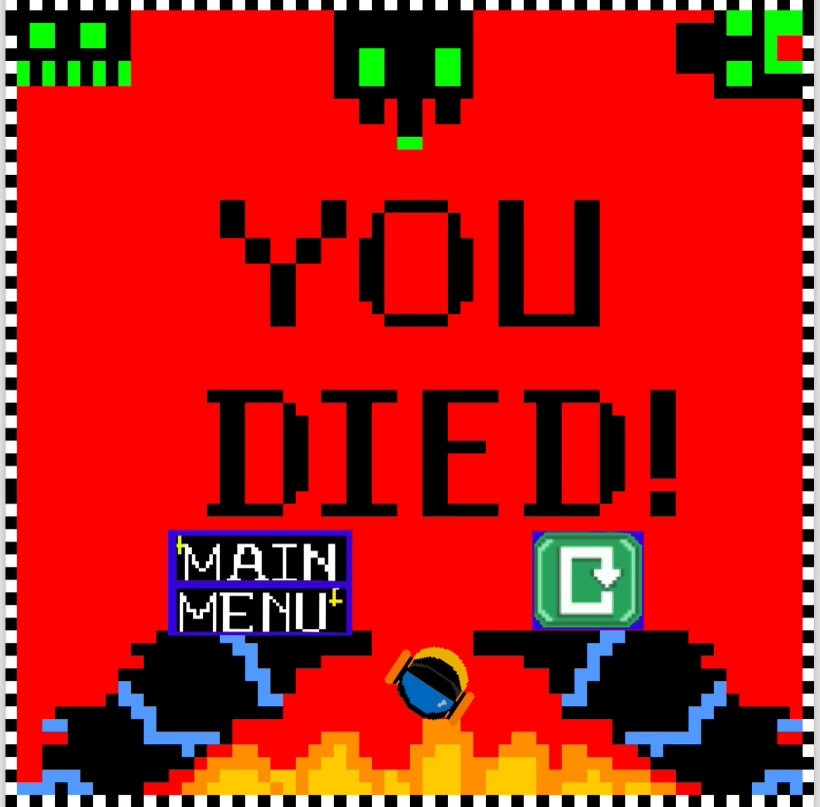

Collaborated with a team to develop a 2D version of Lethal Company. Designed and produced pixel art for characters, environments, and assets, creating a consistent retro visual style that supported the overall gameplay experience. Also integrated inventory management by reading item data (IDs, descriptions, prices, quantities) from a CSV file.


Skills learned:
Pixel art design and sprite creation for characters, environments, and assets
Game development experience using Unity
Project coordinator role: scheduling and organizing team sessions
Team collaboration and communication in a game development setting